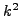
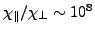

Recently, a fully implicit Newton-Krylov-based solver for resistive MHD has been developed [1,2], which features remarkable properties both in terms of algorithmic and parallel efficiency. Algorithmically, the solver was shown to be optimal, demonstrating a computational complexity which is linearly increasing with the number of degrees of freedom. In parallel, the approach demonstrated excellent scaling up to 4096 processors and 0.13 billion unknowns. The approach rests on a novel preconditioning strategy (oft-called ``physics-based''), which achieves, via a Schur-complement-based factorization of the linearized system, an effective parabolization of the otherwise hyperbolic MHD equations, thereby making them amenable to a classical multigrid treatment.
While such a development represents an important milestone in long-frequency computational MHD, it still suffers from various limitations which need to be addressed, both from the physics and from the implementation standpoints. From the physics point of view, the demonstration in Ref. 1 was performed on the well-known visco-resistive MHD model, which, while useful in many important applications, falls short of the requirements in modern MHD simulation tools. In particular, ``extended MHD'' effects such as electron Hall physics, parallel electron transport, and ion gyroviscosities are known to play an important role in certain regimes of interest (notably, hot, moderate-density plasmas, such as those found in the solar corona, the Earth's magnetosphere, and in thermonuclear magnetic-confinement fusion devices). However, numerically, the inclusion of such physical effects is highly nontrivial. Both electron Hall physics and ion gyroviscosities introduce strongly hyperbolic couplings, resulting in dispersive normal modes (waves) with frequencies scaling with the square of the wavenumber . On the other hand, parallel electron transport, while parabolic in nature, suffers in the discrete from an array of numerical problems stemming from the exceedingly large parallel-to-perpendicular transport coefficient ratios, . Such problems include the near-singularity of the resulting matrices, the lack of positivity of the discrete formulation (even though the continuum features a maximum principle), and the need for high-order spatial discretizations to avoid numerical pollution of the perpendicular dynamics by the parallel one.
Implementation-wise, and with some of the applications of interest in mind, the multigrid strategy used in Ref. 1 needs to be extended to handle general curvilinear geometries, and in particular those featuring a pole (e.g., cylindrical and toroidal). Such singular geometries stress our geometric multigrid implementation, and require special care for a viable multigrid solver.
In this talk, we will describe our progress in addressing some of these limitations. In particular, we will describe our efforts to include electron Hall physics (partially described in [2]) and parallel electron transport effects. We will also describe our strategy for a viable multigrid solver in polar coordinate systems. We will demonstrate the effectiveness of our approach with numerical examples.
[1] L. Chacón, ``An optimal, parallel, fully implicit Newton-Krylov solver for three-dimensional visco-resistive magnetohydrodynamics,'' Phys. Plasmas, 15, 056103 (2008)
[2] L. Chacón, ``Scalable solvers for 3D magnetohydrodynamics,'' J. Physics: Conf. Series, 125, 012041 (2008)